A drop-in art package for the 40×40 → 80×80 world expansion. Same pixlib generators, RAMP-only palette, 1px #0a0810 void outline, dither not blur, iso 64×32 tiles, bottom-center anchors. Wells shown at 2×; gold dash = top label-clear, gold pin = bottom-center anchor.
Rune-arch standing-stone gateway — kin to the Ash Obelisk. Sealed (frame 0) → Active (frames 1–3, rune-pulse @4fps). Sits on a DIRT apron. Map/minimap pip 16×16 @2f.
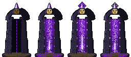
Palewater · Bonefields · frontier themes.
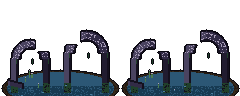
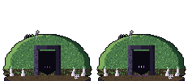
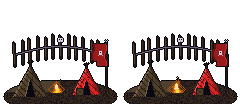
floor_crypt (3 seed variants, tiles like floor_stone) + fixtures with solid-collision flags. standing_brazier flame @4fps.
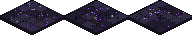
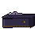
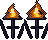
South-facing doors + warm lit windows + same roof conventions, so the outpost faces town.
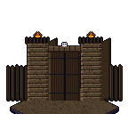
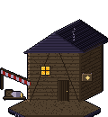
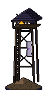
ash_ground (a: ash drift · b: corruption stain), drawn under entities. Doodads bottom-anchored, native size, 2 variants each.
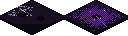
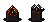